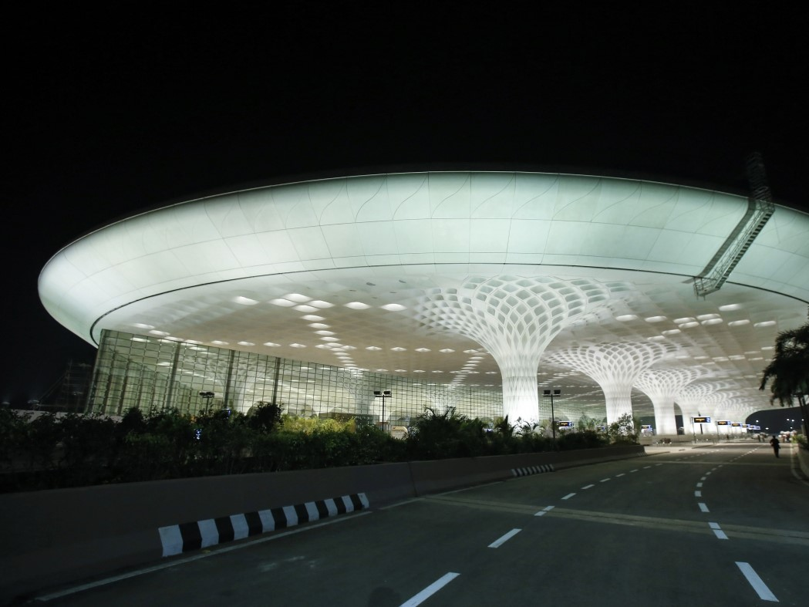

<!DOCTYPE html>
<html>
<head>
    
    <meta http-equiv="content-type" content="text/html; charset=UTF-8" />
    
        <script>
            L_NO_TOUCH = false;
            L_DISABLE_3D = false;
        </script>
    
    <style>html, body {width: 100%;height: 100%;margin: 0;padding: 0;}</style>
    <style>#map {position:absolute;top:0;bottom:0;right:0;left:0;}</style>
    <script src="https://cdn.jsdelivr.net/npm/leaflet@1.9.3/dist/leaflet.js"></script>
    <script src="https://code.jquery.com/jquery-3.7.1.min.js"></script>
    <script src="https://cdn.jsdelivr.net/npm/bootstrap@5.2.2/dist/js/bootstrap.bundle.min.js"></script>
    <script src="https://cdnjs.cloudflare.com/ajax/libs/Leaflet.awesome-markers/2.0.2/leaflet.awesome-markers.js"></script>
    <link rel="stylesheet" href="https://cdn.jsdelivr.net/npm/leaflet@1.9.3/dist/leaflet.css"/>
    <link rel="stylesheet" href="https://cdn.jsdelivr.net/npm/bootstrap@5.2.2/dist/css/bootstrap.min.css"/>
    <link rel="stylesheet" href="https://netdna.bootstrapcdn.com/bootstrap/3.0.0/css/bootstrap-glyphicons.css"/>
    <link rel="stylesheet" href="https://cdn.jsdelivr.net/npm/@fortawesome/fontawesome-free@6.2.0/css/all.min.css"/>
    <link rel="stylesheet" href="https://cdnjs.cloudflare.com/ajax/libs/Leaflet.awesome-markers/2.0.2/leaflet.awesome-markers.css"/>
    <link rel="stylesheet" href="https://cdn.jsdelivr.net/gh/python-visualization/folium/folium/templates/leaflet.awesome.rotate.min.css"/>
    
            <meta name="viewport" content="width=device-width,
                initial-scale=1.0, maximum-scale=1.0, user-scalable=no" />
            <style>
                #map_efd27617807e53b1ad8b4c580e32fd43 {
                    position: relative;
                    width: 100.0%;
                    height: 100.0%;
                    left: 0.0%;
                    top: 0.0%;
                }
                .leaflet-container { font-size: 1rem; }
            </style>
        
</head>
<body>
    
    
            <div class="folium-map" id="map_efd27617807e53b1ad8b4c580e32fd43" ></div>
        
</body>
<script>
    
    
            var map_efd27617807e53b1ad8b4c580e32fd43 = L.map(
                "map_efd27617807e53b1ad8b4c580e32fd43",
                {
                    center: [20.5937, 78.9629],
                    crs: L.CRS.EPSG3857,
                    zoom: 5,
                    zoomControl: true,
                    preferCanvas: false,
                }
            );

            

        
    
            var tile_layer_4162a806ee4e0b8ff54905caabea92d5 = L.tileLayer(
                "https://tile.openstreetmap.org/{z}/{x}/{y}.png",
                {"attribution": "\u0026copy; \u003ca href=\"https://www.openstreetmap.org/copyright\"\u003eOpenStreetMap\u003c/a\u003e contributors", "detectRetina": false, "maxNativeZoom": 19, "maxZoom": 19, "minZoom": 0, "noWrap": false, "opacity": 1, "subdomains": "abc", "tms": false}
            );
        
    
            tile_layer_4162a806ee4e0b8ff54905caabea92d5.addTo(map_efd27617807e53b1ad8b4c580e32fd43);
        
    
            var marker_f6cd431358333a5d6e5a4384458a822f = L.marker(
                [28.55683666833814, 77.10145190844422],
                {}
            ).addTo(map_efd27617807e53b1ad8b4c580e32fd43);
        
    
            var icon_b239bc0500771f6948a7c18ffe8572c2 = L.AwesomeMarkers.icon(
                {"extraClasses": "fa-rotate-0", "icon": "plane", "iconColor": "blue", "markerColor": "blue", "prefix": "fa"}
            );
            marker_f6cd431358333a5d6e5a4384458a822f.setIcon(icon_b239bc0500771f6948a7c18ffe8572c2);
        
    
        var popup_7b1da5b48160904d8bbca3410ba39303 = L.popup({"maxWidth": "100%"});

        
            
                var html_6250b1b31c6a6fc370b854b1adab1a41 = $(`<div id="html_6250b1b31c6a6fc370b854b1adab1a41" style="width: 100.0%; height: 100.0%;"><h1>Delhi, Indira Gandhi</h1><p>El Aeropuerto Internacional Indira Gandhi, situado a 16 km del centro de la ciudad de Delhi, es uno de los principales accesos nacionales e internacionales de la India.</p></div>`)[0];
                popup_7b1da5b48160904d8bbca3410ba39303.setContent(html_6250b1b31c6a6fc370b854b1adab1a41);
            
        

        marker_f6cd431358333a5d6e5a4384458a822f.bindPopup(popup_7b1da5b48160904d8bbca3410ba39303)
        ;

        
    
    
            marker_f6cd431358333a5d6e5a4384458a822f.bindTooltip(
                `<div>
                     Indira Gandhi
                 </div>`,
                {"sticky": true}
            );
        
    
            var marker_8bb82ebc6f6adad03c6794f1458b0463 = L.marker(
                [19.09055784461296, 72.8640514743381],
                {}
            ).addTo(map_efd27617807e53b1ad8b4c580e32fd43);
        
    
            var icon_db8b67a30ab75ff8ce9c566a740b1b7b = L.AwesomeMarkers.icon(
                {"extraClasses": "fa-rotate-0", "icon": "plane", "iconColor": "blue", "markerColor": "blue", "prefix": "fa"}
            );
            marker_8bb82ebc6f6adad03c6794f1458b0463.setIcon(icon_db8b67a30ab75ff8ce9c566a740b1b7b);
        
    
        var popup_4d68651a9ffe22ca65521204881e6cd2 = L.popup({"maxWidth": "100%"});

        
            
                var html_783ecd875b5e5bd6f8d0572c81d1f8f3 = $(`<div id="html_783ecd875b5e5bd6f8d0572c81d1f8f3" style="width: 100.0%; height: 100.0%;"><h1>Mumbai, Chhatrapati Shivaji</h1><p>El Aeropuerto Internacional Chhatrapati Shivaji, anteriormente Aeropuerto Internacional de Sahar, es un aeropuerto de Bombay, en la India.</p></div>`)[0];
                popup_4d68651a9ffe22ca65521204881e6cd2.setContent(html_783ecd875b5e5bd6f8d0572c81d1f8f3);
            
        

        marker_8bb82ebc6f6adad03c6794f1458b0463.bindPopup(popup_4d68651a9ffe22ca65521204881e6cd2)
        ;

        
    
    
            marker_8bb82ebc6f6adad03c6794f1458b0463.bindTooltip(
                `<div>
                     Chhatrapati Shivaji
                 </div>`,
                {"sticky": true}
            );
        
    
            var marker_ea423d162b82e368d29620878c4789fb = L.marker(
                [13.199676823889089, 77.70876834609997],
                {}
            ).addTo(map_efd27617807e53b1ad8b4c580e32fd43);
        
    
            var icon_2767a84679a6a5521f3e18362f8ee79e = L.AwesomeMarkers.icon(
                {"extraClasses": "fa-rotate-0", "icon": "plane", "iconColor": "blue", "markerColor": "blue", "prefix": "fa"}
            );
            marker_ea423d162b82e368d29620878c4789fb.setIcon(icon_2767a84679a6a5521f3e18362f8ee79e);
        
    
        var popup_34b913c20f39fe14319c92e6129c4c11 = L.popup({"maxWidth": "100%"});

        
            
                var html_6817271b5f6369f7011c3a1cbaaaaa26 = $(`<div id="html_6817271b5f6369f7011c3a1cbaaaaa26" style="width: 100.0%; height: 100.0%;"><h1>Bangalore, Kempegowda</h1><p>El Aeropuerto Internacional Kempegowda es un aeropuerto que sirve a Bangalore (Bengaluru), Karnataka, India. Se encuentra aproximadamente 40 kilómetros (25 mi) de la ciudad, cerca del pueblo de Devanahalli.</p></div>`)[0];
                popup_34b913c20f39fe14319c92e6129c4c11.setContent(html_6817271b5f6369f7011c3a1cbaaaaa26);
            
        

        marker_ea423d162b82e368d29620878c4789fb.bindPopup(popup_34b913c20f39fe14319c92e6129c4c11)
        ;

        
    
    
            marker_ea423d162b82e368d29620878c4789fb.bindTooltip(
                `<div>
                     Kempegowda
                 </div>`,
                {"sticky": true}
            );
        
    
            var marker_d3a7b6e64b8ca4524a03cf46a84392e2 = L.marker(
                [22.653752100434122, 88.4457927992844],
                {}
            ).addTo(map_efd27617807e53b1ad8b4c580e32fd43);
        
    
            var icon_b7ee2ab8b5a1eb49b29c95fa3051ef73 = L.AwesomeMarkers.icon(
                {"extraClasses": "fa-rotate-0", "icon": "plane", "iconColor": "blue", "markerColor": "blue", "prefix": "fa"}
            );
            marker_d3a7b6e64b8ca4524a03cf46a84392e2.setIcon(icon_b7ee2ab8b5a1eb49b29c95fa3051ef73);
        
    
        var popup_ecc1c72cbef2e29cdca27b2b179ecfec = L.popup({"maxWidth": "100%"});

        
            
                var html_ceab0e603c762141e583008a68d2b2bc = $(`<div id="html_ceab0e603c762141e583008a68d2b2bc" style="width: 100.0%; height: 100.0%;"><h1>Kolkata, Netaji Subhas Chandra Bose</h1><p>El Aeropuerto Internacional Netaji Subash Chandra Bose es un aeropuerto de la India en las cercanías de la ciudad de Calcuta. Es el cuarto aeropuerto más importante de la India.</p></div>`)[0];
                popup_ecc1c72cbef2e29cdca27b2b179ecfec.setContent(html_ceab0e603c762141e583008a68d2b2bc);
            
        

        marker_d3a7b6e64b8ca4524a03cf46a84392e2.bindPopup(popup_ecc1c72cbef2e29cdca27b2b179ecfec)
        ;

        
    
    
            marker_d3a7b6e64b8ca4524a03cf46a84392e2.bindTooltip(
                `<div>
                     Netaji Subhas Chandra Bose
                 </div>`,
                {"sticky": true}
            );
        
    
            var marker_57de836d3250489ea6ee648e112efb26 = L.marker(
                [17.240411708991154, 78.42996547954324],
                {}
            ).addTo(map_efd27617807e53b1ad8b4c580e32fd43);
        
    
            var icon_d550251e65636cd79193cfcf8e0d320f = L.AwesomeMarkers.icon(
                {"extraClasses": "fa-rotate-0", "icon": "plane", "iconColor": "blue", "markerColor": "blue", "prefix": "fa"}
            );
            marker_57de836d3250489ea6ee648e112efb26.setIcon(icon_d550251e65636cd79193cfcf8e0d320f);
        
    
        var popup_aa2a87a6bb5c3a87c65607a9ce7c4423 = L.popup({"maxWidth": "100%"});

        
            
                var html_53d0b663bcc7c72659ca20c55210a46b = $(`<div id="html_53d0b663bcc7c72659ca20c55210a46b" style="width: 100.0%; height: 100.0%;"><h1>Hyderabad, Rajiv Gandhi</h1><p>El Aeropuerto Internacional Rajiv Gandhi es un nuevo aeropuerto cerca de Shamshabad, a unos 22 km de la ciudad de Hyderabad, en India.</p></div>`)[0];
                popup_aa2a87a6bb5c3a87c65607a9ce7c4423.setContent(html_53d0b663bcc7c72659ca20c55210a46b);
            
        

        marker_57de836d3250489ea6ee648e112efb26.bindPopup(popup_aa2a87a6bb5c3a87c65607a9ce7c4423)
        ;

        
    
    
            marker_57de836d3250489ea6ee648e112efb26.bindTooltip(
                `<div>
                     Rajiv Gandhi
                 </div>`,
                {"sticky": true}
            );
        
    
            var marker_f7c4817bfa06b23418f530a93f1091ab = L.marker(
                [12.994792795088543, 80.1724829030673],
                {}
            ).addTo(map_efd27617807e53b1ad8b4c580e32fd43);
        
    
            var icon_f6fa4fff8765d7a0aeebf459c0ade968 = L.AwesomeMarkers.icon(
                {"extraClasses": "fa-rotate-0", "icon": "plane", "iconColor": "blue", "markerColor": "blue", "prefix": "fa"}
            );
            marker_f7c4817bfa06b23418f530a93f1091ab.setIcon(icon_f6fa4fff8765d7a0aeebf459c0ade968);
        
    
        var popup_5ddefa2ab411a07e949c240aecc4ea29 = L.popup({"maxWidth": "100%"});

        
            
                var html_c2879be0b96f60a2767f753f0c1e7bdc = $(`<div id="html_c2879be0b96f60a2767f753f0c1e7bdc" style="width: 100.0%; height: 100.0%;"><h1>Chennai, Chennai</h1><p>El Aeropuerto Internacional de Chennai se encuentra en Meenambakkam, 7 km al sur de Madrás, India. Es la tercera mayor puerta de entrada internacional del país</p></div>`)[0];
                popup_5ddefa2ab411a07e949c240aecc4ea29.setContent(html_c2879be0b96f60a2767f753f0c1e7bdc);
            
        

        marker_f7c4817bfa06b23418f530a93f1091ab.bindPopup(popup_5ddefa2ab411a07e949c240aecc4ea29)
        ;

        
    
    
            marker_f7c4817bfa06b23418f530a93f1091ab.bindTooltip(
                `<div>
                     Chennai
                 </div>`,
                {"sticky": true}
            );
        
</script>
</html>